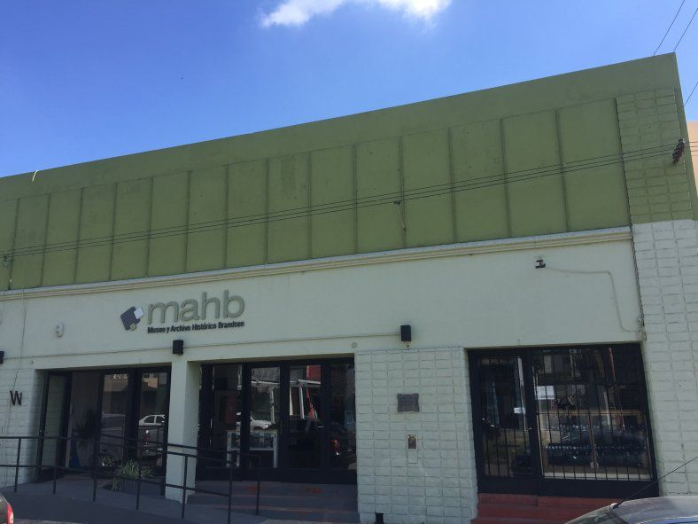
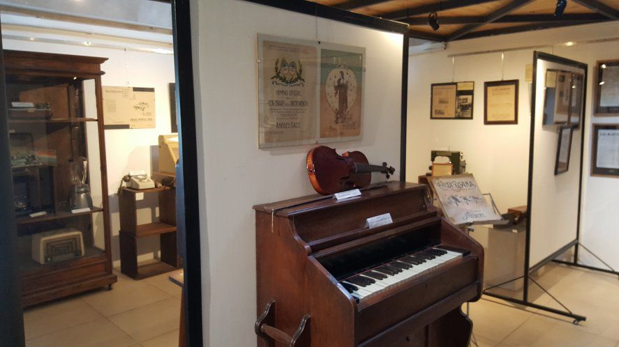

Museo Dr. Frutos E. Ortiz
Descubre la historia de Brandsen y su patrimonio local en un diseño claro y moderno.

Somos estudiantes
Juarez Ignacio, Felipe Prida y Yanelli Gadiel, estudiantes de programación de 7mo año.

- Aprendemos HTML y CSS creando este proyecto.
- Queremos mejorar el trabajo en grupo y la comunicación.
- Trabajamos para llegar listos a las olimpiadas.
Sobre el museo : introduccion
El patrimonio histórico y cultural de los municipios de la provincia de Buenos Aires constituye un recurso fundamental para la reconstrucción de la identidad regional y la consolidación de la memoria colectiva. En el marco del Partido de Coronel Brandsen , este acervo encuentra su principal nodo de preservación, investigación y difusión en el Museo y Archivo Histórico Municipal "Dr. Frutos Enrique Ortiz". Fundada formalme nte en octubre de 2011, la institución emerge no solo como un depósito de objetos del pasado, sino comoun espacio dinamizador de la vida comunitaria, donde el patrimonio material e inmaterial dialoga con los desafíos identitarios del presente.El análisis de este museo resulta de especial interés para el presente proyecto debido a su particular modelo de gestión asociativa. Nacido a partir de una vigorosa movilización vecinal impulsada por la Comisión Pro-Museo y el médico local Dr. Frutos Enrique Ortiz, el espacio materializa una articulación estratégica entre la sociedad civil organizada y el Estado municipal. Esta sinergia permitió recuperar un hito del paisaje urbano: el centenario edificio de la Sociedad Española de Socorros Mutuos — antiguo Cine-Teatro Español—, refuncion alizándolo mediante un proceso de puesta en valor arquitectónica para albergar las salas de exhibición, áreas de conservación y el archivo documental. l acervo del museo se caracteriza por una procedencia eminentemente comunitaria, sustentada en la donación de colecciones particulares de familias fundadoras e inmigrantes. Sus líneas curatoriales abarcan desde la arqueología urbana y los testimonios de la vida cotidiana rural y urbana de los siglos XIX y XX, hasta un pilar crítico en la historia de la región: el desarrollo técnico y social del Ferrocarril del Sud, factor determinante en la fundación y trazado urbano del pueblo. Paralelamente, su sección de Archivo Histórico resguarda documentos únicos, registros cartográficos y material fotográfico que constituyen la base de las investigaciones sobre el proceso migratorio y productivo de la cuenca del Río Samborombón.Hoy en día, la institución trasciende la conservación estática mediante una activa agenda de mediación cultural. A través de la rotación trimestral de e xposiciones, programas de articulación pedagógica con los niveles educativos locales y la participación en redes patrimoniales regionales, el museo funciona como una plataforma de aprendizaje abierto. Por lo tanto, el estudio del Museo y Archivo Histórico de Brandsen permite evaluar el impacto socio-cultural de las instituciones museísticas de escala local, analizando cómo la salvaguarda de la microhistoria se convierte en un motor de cohesión social, desarrollo turístico-cultural y apropiación ciudadana del territorio.
Colecciones destacadas

- Colección de Historia de la Salud Local: Instrumental médico original: Perteneciente al Dr. Frutos Enrique Ortiz. Incluye herramientas de diagnóstico de mediados del siglo XX. Mobiliario técnico: Elementos de consultorios antiguos.
- Colección Ferroviaria (Ferrocarril del Sud) Herramientas de telegrafía: Equipos técnicos utilizados para la comunicación entre estaciones. Cartelería pública de fundición: Nomencladores originales de las vías y andenes. Planos y mapas de trazas: Documentación técnica del tendido ferroviario regional
- Patrimonio Industrial, Rural y de Oficios: Maquinaria de labranza: Herramientas manuales de labranza de las primeras colonias agrícolas. Elementos del Cine-Teatro Español: Objetos recuperados, proyectores antiguos y mobiliario original del inmueble centenario donde hoy funciona el museo
Síguenos en Redes Sociales
¡Mantente al día con las últimas noticias, eventos y exposiciones del Museo Dr. Frutos E. Ortiz!